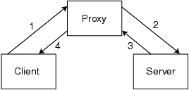

Figure 1: Retrieving a web page using a proxy. (1) The client sends the requested URL to the proxy. (2) The proxy makes the request on behalf of the client. (3) The server returns the document to the proxy. (4) The proxy returns the document to the client.
Back to Article